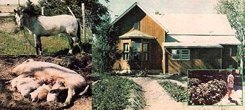

ABOVE LEFT: Jake, our lawn mower. BELOW LEFT: Juicy Lucy and family . . . pigs on the way to pork. RIGHT: Our remodeled house . . . and the terraced French intensive beds. INSET: Two-year-old Katie and her bean patch.
Lee Waggoner